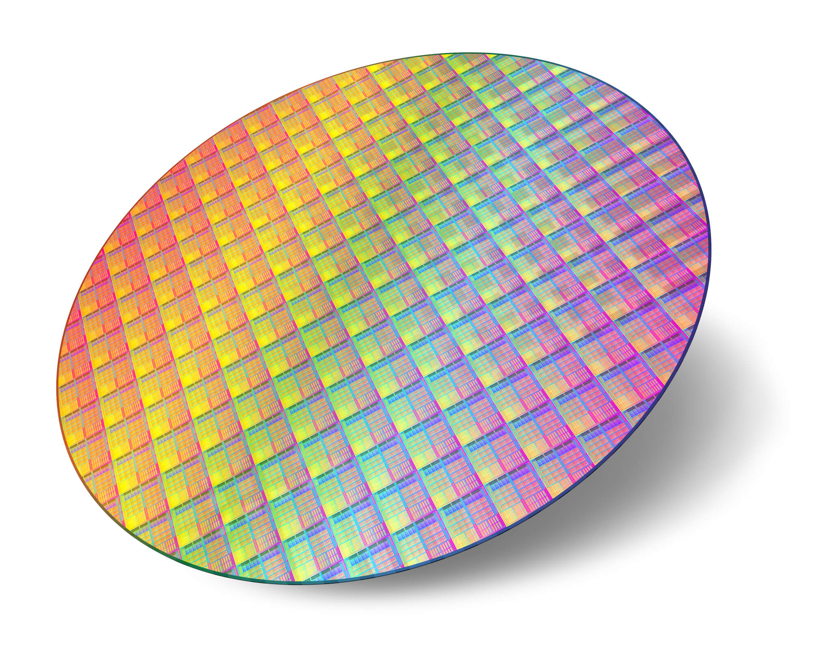
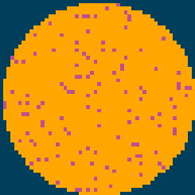
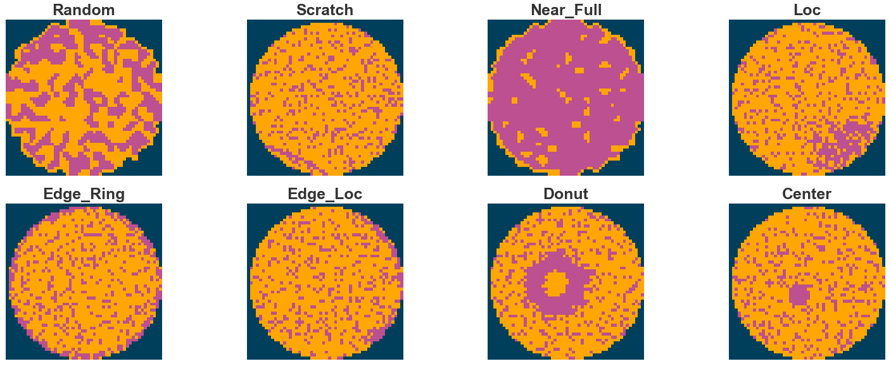
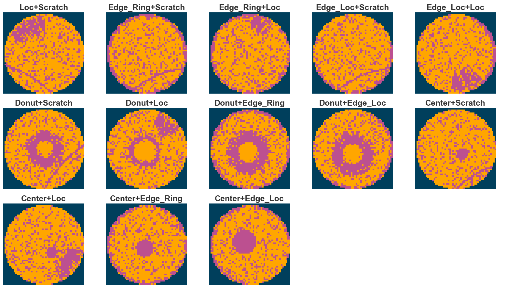
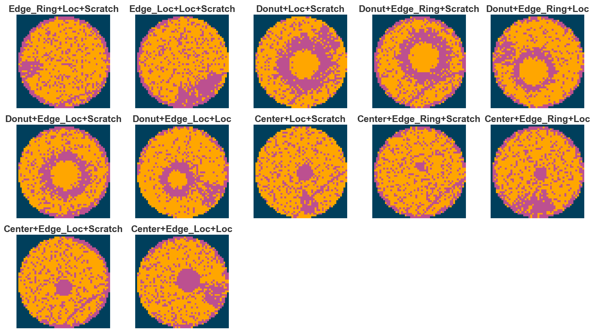
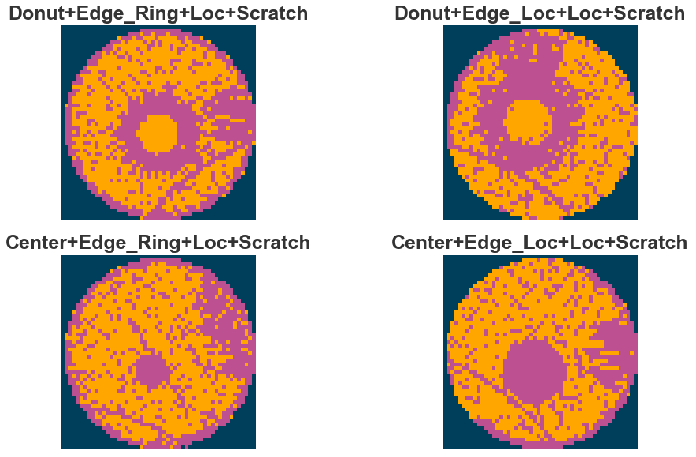
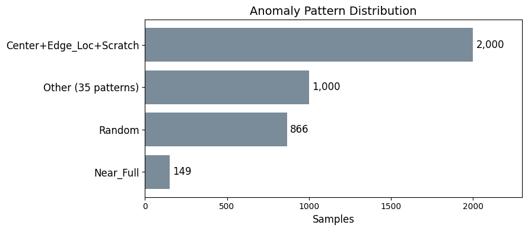
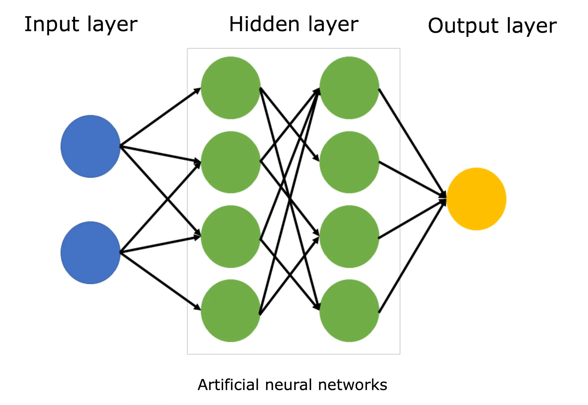
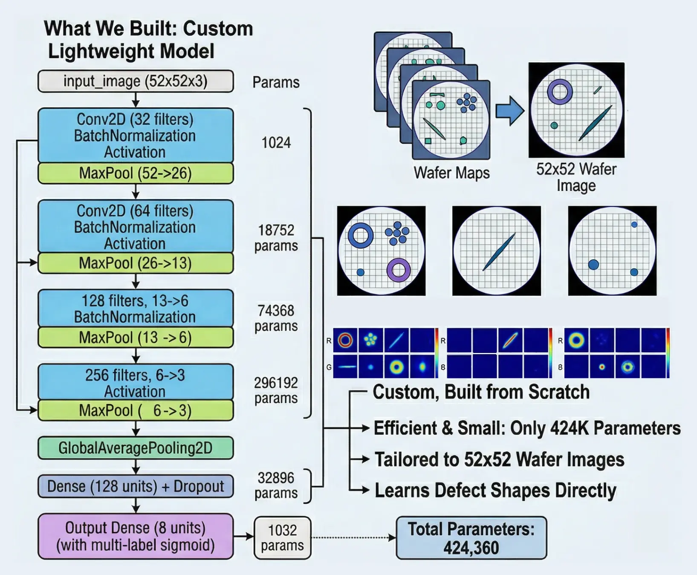
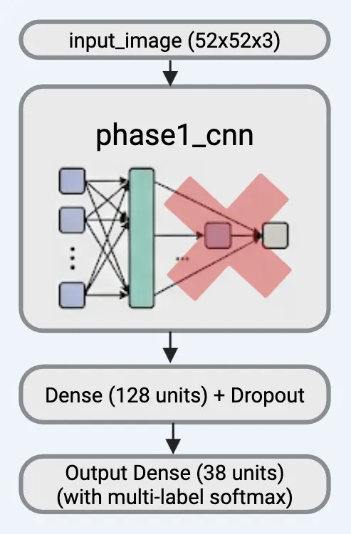

WaferGuardML
AI-Powered Quality Intelligence for Semiconductor Manufacturing
2026-05-05
Agenda
- Background
- The Data & Our Model
- The Problem
- Our Solution
- The Business Value
- Live Demo
From Silicon to Chips

Semiconductor chips power everything from phones to cars to medical devices. They start as a thin circular slice of silicon called a wafer.
|
Wafer Thin, round slice of pure silicon (~12 inches wide) |
→ |
Dies Hundreds of tiny chips built onto one wafer |
→ |
Testing Each die tested electrically before being packaged |
→ |
Chips Passing dies become chips in phones, cars, etc. |
The percentage of dies that pass testing is called yield. Higher yield = lower cost. Anomalies reduce yield.
How Wafer Maps Are Generated
After testing, the results are turned into a wafer map — a picture of the wafer showing which dies passed and which failed.
Each pixel on the map represents one die:
- 0 = blank (no die at this location)
- 1 = passed electrical test ✓
- 2 = failed electrical test ✗
When many dies fail in a recognizable shape, that’s an anomaly pattern — and it usually points to a specific problem in the manufacturing process.

Anomaly Patterns Tell a Story
Failed dies don’t appear randomly. They form patterns that reveal what went wrong during manufacturing.
Each pattern points to a specific manufacturing process:
- Donut → polishing problem (CMP)
- Center → deposition chamber issue
- Scratch → handling damage
- Edge Ring → etching problem
There are 8 base anomaly types, and they can appear in combinations — giving us 38 total patterns.

Single Anomaly Patterns

Two-Anomaly Combinations

Three-Anomaly Combinations

Four-Anomaly Combinations

Our Dataset
We worked with a dataset of 38,015 wafer maps from real semiconductor manufacturing.
- Each image: 52 × 52 pixels
- 38 unique anomaly patterns (8 base + 29 combinations)
- Some patterns are rare (as few as ~200 samples)
- Some are common (~1,000+ samples)
This imbalance reflects real manufacturing — some anomalies genuinely occur more often than others.

What is a Neural Network?
Think of it as a decision-making system inspired by the brain:
- Inputs: Raw data (e.g., pixel values of a wafer image)
- Hidden layers: Each layer learns to detect increasingly complex patterns
- Output: A prediction (e.g., “this wafer has a scratch anomaly”)
The network learns by example — we show it thousands of labeled wafer images, and it figures out what patterns correspond to each anomaly type.

How Our AI Model Works
Example wafer - Center + Loc + Scratch
|
Phase 1: 8 Yes/No Questions |
→ |
Transfer |
→ |
Phase 2: Pick Best Match |
→ |
Accuracy Check |
- Phase 1: Each anomaly scored independently — above 50% means “present.”
- Phase 2: Picks the single highest-probability pattern out of 38. Correct if it matches the true label
- F1 score measures how well the model catches real anomalies without raising false alarms. Our Custom CNN outperformed MobileNetV2 in both phases. — 97%+ are predicted correctly
The Problem
Every day, semiconductor manufacturers produce thousands of wafers. Anomalies happen. The real challenge isn’t finding them — it’s knowing what to do about them.
|
Today Pattern-by-pattern analysis · Weeks to find root causes · No financial visibility |
→ |
With WaferGuardML 97%+ accuracy · Instant root cause · Clear cost of inaction |
Key Stakeholders
|
Plant Operations Reduce downtime Improve efficiency |
Process Engineering Root cause identification |
Quality Assurance Anomaly trends Yield tracking |
Finance Cost-benefit analysis Repair decisions |
What is WaferGuardML?
|
Upload Wafer inspection data goes into the system |
→ |
Detect AI identifies anomaly patterns with 97%+ accuracy |
→ |
Diagnose Traces each anomaly to the specific process step |
→ |
Recommend Tells you what to fix, what it costs, and what you save |
An end-to-end platform that turns raw wafer data into prioritized, dollar-valued repair recommendations.
The Key Insight: Fix the Process, Not the Pattern
Most anomaly analysis tools report results per anomaly pattern. That’s useful for engineers, but it doesn’t tell the business what to actually do.
Our approach is different. We group results by action — the manufacturing process step you need to fix.
|
Old Approach “You have 4,725 wafers with Donut+Edge_Loc+ Loc+Scratch” What do I do with that? |
→ |
Our Approach “Replace your CMP pad. Cost: $130K. This fixes Donut anomalies across 12 patterns. You save $2.1M/month.” |
The Cascade Effect
When you fix one process step, you don’t just fix one anomaly pattern. You fix every pattern that involves that anomaly type.
|
Fix CMP Process ($130K) |
= |
12 patterns eliminated |
Live Demo
Walking through the full WaferGuardML experience
|
Upload Wafer batch data |
→ |
Detect AI classifies each wafer |
→ |
Analyze Financial impact by process action |
→ |
Act Prioritized repair recommendations |
Switching to live demo…
Thank You
Questions?
Appendix
Wafer Map Generation — Detail
|
Fabrication Wafer goes through hundreds of process steps (etching, deposition…) |
→ |
Probe Testing Probe card contacts each die and measures electrical characteristics |
→ |
Classification Each die marked as pass (1), fail (2), or blank (0) |
→ |
Wafer Map 52×52 grid preserving physical layout of dies on the wafer |
Each pixel in a wafer map is not a color or brightness value — it represents the electrical test outcome of a single die. The spatial arrangement reveals anomaly patterns that point to specific manufacturing problems.
Dataset Details
- 38,015 wafer map images, each 52×52 pixels
- 3 pixel states: 0 (blank), 1 (pass), 2 (fail)
- 8 base anomaly types that combine into 38 unique patterns
- Labels use one-hot encoding (8-dimensional vector)
- Data split: 70% train / 15% validation / 15% test (stratified to preserve all 38 patterns)
- Class imbalance handled with focal loss and per-label class weights
| Label | Train | Val | Test |
|---|---|---|---|
| Center | 9,100 | 1,950 | 1,950 |
| Donut | 8,400 | 1,800 | 1,800 |
| Edge_Loc | 9,100 | 1,950 | 1,950 |
| Edge_Ring | 8,400 | 1,800 | 1,800 |
| Loc | 12,600 | 2,700 | 2,700 |
| Near_Full | 104 | 22 | 23 |
| Scratch | 13,300 | 2,850 | 2,850 |
| Random | 606 | 130 | 130 |
Phase 1: Detecting the 8 Base Anomaly Types

Output (Threshold = 50%)
Center = 80% ✅ Edge Ring = 85% ✅ Scratch = 80% ✅ Donut = 30% ❌ Edge Loc = 40% ❌ Loc = 10% ❌ Near Full = 1% ❌ Random = 23% ❌
How we validated it
- Compared against MobileNetV2 — a model Google trained on millions of images
- If our custom model matches or beats it, we know our approach works
Phase 2: From 8 Base Types to 38 Anomaly Patterns
We take our trained Phase 1 model (which learned to detect 8 base anomaly types) and build on top of it to classify all 38 anomaly patterns.

|
Transfer learning from Phase 1 Model Detects 8 base anomaly patterns (Center, Donut, Scratch, etc.) |
→ |
Phase 2 Model Classify all 38 anomaly patterns (base + combinations) |
Model Performance
|
Phase 1 — Custom CNN (8-label) |
Phase 1 — MobileNetV2 (8-label) |
Phase 2 — Custom CNN (38-class) |
Phase 2 — MobileNetV2 (38-class) |
|
|---|---|---|---|---|
| Macro F1 | 0.9779 | 0.8998 | 0.9736 | 0.9667 |
| Weighted F1 | 0.9905 | 0.8847 | 0.9735 | 0.9658 |
F1 score measures how well the model catches real anomalies without raising false alarms. Our Custom CNN outperformed MobileNetV2 in both phases.
The 8 Base Anomaly Types
| Anomaly | Process Step | What Causes It |
|---|---|---|
| Center | Deposition / Plasma | Chamber contamination, RF/temp drift |
| Donut | CMP / Lithography | Worn polishing pad, contaminated slurry |
| Edge_Loc | Diffusion / Thermal | Furnace temperature imbalance |
| Edge_Ring | Plasma Etch | Worn focus ring, edge hardware issues |
| Loc | Tool-specific | Robot vibration, chamber wall contamination |
| Near_Full | Major Excursion | Critical process failure, requires immediate stop |
| Scratch | Wafer Handling / CMP | Damaged robot end effectors, FOUP contamination |
| Random | Environment | Particle contamination, filter degradation |
Financial Parameters
| Anomaly | Repair Cost | Replacement Cost | Downtime/hr | Yield Loss | Risk |
|---|---|---|---|---|---|
| Center | $275K | $6.0M | $2.05M | 10–40% | High |
| Donut | $130K | $5.25M | $550K | 15–50% | High |
| Edge_Loc | $110K | $6.0M | $550K | 1–10% | Medium |
| Edge_Ring | $255K | $12.5M | $2.25M | 0–15% | High |
| Loc | $155K | $8.5M | $2.05M | 1–10% | Medium |
| Near_Full | $525K | $8.5M | $2.45M | 50–100% | Critical |
| Scratch | $77.5K | $5.25M | $550K | 5–50% | Critical |
| Random | $130K | N/A | $2.05M | 1–20% | Medium |
For combination anomalies, costs are aggregated from components. Repair costs sum, downtime takes the maximum, yield loss compounds.
How Accuracy is Measured
Example wafer: Center + Loc + Scratch
|
Phase 1: 8 Yes/No Questions |
→ |
Transfer |
→ |
Phase 2: Pick Best Match |
→ |
Accuracy Check |
Use Case: How a Manufacturer Benefits
|
Step 1 Upload batch of wafer inspection data to the dashboard |
→ |
Step 2 System detects Donut anomalies trending upward across batches |
→ |
Step 3 Dashboard shows: CMP process is the root cause |
→ |
Step 4 Recommendation: Replace CMP pad $130K to save $2.1M/mo |
The manufacturer doesn’t need to understand anomaly patterns. They get a clear answer: what to fix, what it costs, and what they save.
Financial Impact by Process Action
Instead of costs per anomaly pattern, we show costs per action the manufacturer can take:
| Action | Process Step | Repair Cost | Patterns Fixed | Total Daily Savings | Break-Even |
|---|---|---|---|---|---|
| Replace CMP pad + refresh slurry | CMP / Lithography | \(130K</td><td>12 patterns with Donut</td><td style="color: #86BC25;">\)X | < 1 day | ||
| Chamber clean + RF recalibration | Deposition / Plasma | \(275K</td><td>10 patterns with Center</td><td style="color: #86BC25;">\)X | X days | ||
| Replace focus ring + edge hardware | Plasma Etch | \(255K</td><td>10 patterns with Edge_Ring</td><td style="color: #86BC25;">\)X | X days | ||
| Swap/clean robot end effectors | Wafer Handling | \(77.5K</td><td>12 patterns with Scratch</td><td style="color: #86BC25;">\)X | < 1 day | ||
| Furnace zone recalibration | Diffusion / Thermal | \(110K</td><td>10 patterns with Edge_Loc</td><td style="color: #86BC25;">\)X | X days |
Daily savings values will be populated from the final app output. “Patterns Fixed” shows how one action cascades across multiple anomaly combinations.
Key Takeaways
|
97%+ Accuracy Our AI identifies 38 anomaly patterns with high confidence |
Action-Based Financial impact grouped by what you can fix, not by anomaly pattern |
Cascade Effect One process fix eliminates anomalies across multiple patterns simultaneously |
Clear ROI Every recommendation comes with cost, savings, and break-even time |
WaferGuardML doesn’t just tell manufacturers they have a problem. It tells them exactly what to fix, how much it costs, and how much they save.
How Our AI Model Works — Detail
We built a custom Convolutional Neural Network (CNN) — a type of AI designed specifically for image recognition.
Phase 1 (8 base types)
- 4 layers of filters that learn to detect shapes (edges, rings, clusters)
- Each anomaly type scored independently (yes/no)
- Above 50% confidence = anomaly is present
- A wafer can have multiple anomalies at once
Phase 2 (38 patterns)
- Reuses everything Phase 1 learned
- Adds a new layer that picks the exact combination
- Picks the single most likely pattern out of 38
- 97%+ accuracy on unseen test data
We compared our model against MobileNetV2 (Google’s pre-trained model). Our custom model scored higher on every metric, proving that a purpose-built solution outperforms a general one.
How Our AI Model Works
We built a custom CNN model that looks at wafer maps and identifies the anomaly pattern automatically.
|
Phase 1 Model learns to detect the 8 base anomaly types (Donut, Center, Scratch…) |
→ |
Phase 2 Uses that knowledge to classify all 38 anomaly patterns |
→ |
Result 97%+ accuracy Outperformed Google’s pre-trained model |
We validated our model by comparing it against MobileNetV2 — a well-known model from Google trained on millions of images. Our purpose-built model outperformed it on every metric.

Deloitte.